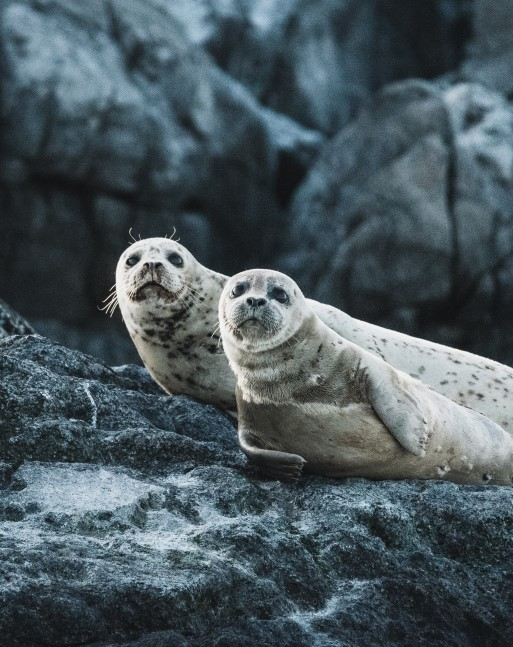

Strange Beanz Fly Overhead
On Saturday Morning many beans began flying through trees in the Pumpernickel neighborhood.
Far out in the uncharted backwaters of the unfashionable end of the western spiral arm of the Galaxy lies a small unregarded yellow sun. Orbiting this at a distance of roughly ninety-two million miles is an utterly insignificant little blue green planet whose ape- descended life forms are so amazingly primitive that they still think digital watches are a pretty neat idea. This planet has - or rather had - a problem, which was this: most of the people living on it were unhappy for pretty much of the time. Many solutions were suggested for this problem, but most of these were largely concerned with the movements of small green pieces of paper, which is odd because on the whole it wasn't the small green pieces of paper that were unhappy. And so the problem remained; lots of the people were mean, and most of them were miserable, even the ones with digital watches. Many were increasingly of the opinion that they'd all made a big mistake in coming down from the trees in the first place. And some suggested that even the trees had been a bad move, and that no one should ever have left the oceans. Then, one Thursday, nearly two thousand years after one man had been nailed to a tree for saying how great it would be to be nice to people for a change, a girl sitting on her own in a small cafe in Rickmansworth England suddenly realized what it was that had been going wrong all this time, and she finally knew how the world could be made a good and happy place. This time it was right, it would work, and no one would have to get nailed to anything. Sadly, however, before she could get to a telephone to tell anyone about it, a terribly stupid catastrophe occurred, and the idea was lost forever. This is not her story.